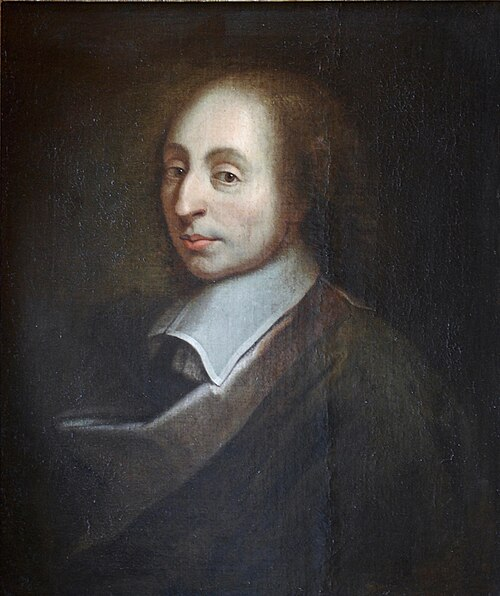
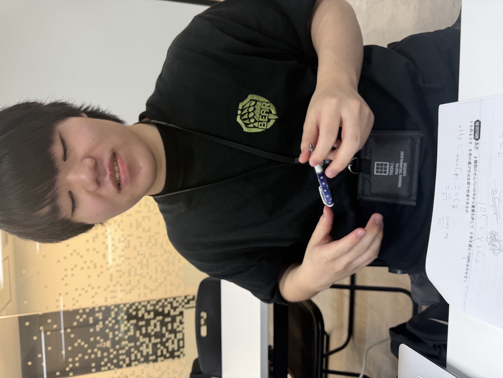

「人間はひとくきの葦にすぎない。自然のなかで最も弱いものである。だが、それは考える葦である。彼をおしつぶすために、宇宙全体が武装するには及ばない。蒸気や一滴の水でも彼を殺すのに十分である。だが、たとい宇宙が彼をおしつぶしても、人間は彼を殺すものより尊いだろう。なぜなら、彼は自分が死ねることと、宇宙の自分に対する優勢とを知っているからである。宇宙は何も知らない。だから、われわれの尊厳のすべては、考えることのなかにある。われわれはそこから立ち上がらなければならないのであって、われわれが満たすことのできない空間や時間からではない。だから、よく考えることを努めよう。ここに道徳の原理がある。考える葦。 私が私の尊厳を求めなければならないのは、空間からではなく、私の考えの規整からである。私は多くの土地を所有したところで、優ることにならないだろう。空間によっては、宇宙は私をつつみ、一つの点のようにのみこむ。考えることによって、私が宇宙をつつむ。」
「脱皮できない蛇は破滅する。その意見を脱ぎ換えることを妨げられた精神も同様である。それは精神であることをやめる。君の魂のなかにある英雄を放棄してはならない。自分が目指す最高の希望を神聖なものとして維持し続けよ。なぜなら、人間は一度その希望を失うと、凡庸な日常に埋もれてしまうからだ。」

「━━━━━━━今日タムジャイなんだよね。」
「奢り？」
「俺はこの1週間ファミチキの百円引きクーポンを生きがいに生きてきた。」
「野菜は美味しいから食べるんだよ。野菜食べて偉いとか、野菜を不味い食べ物だと思ってるから出てくる言葉だろ?野菜は美味しい食べ物なんだよ。」